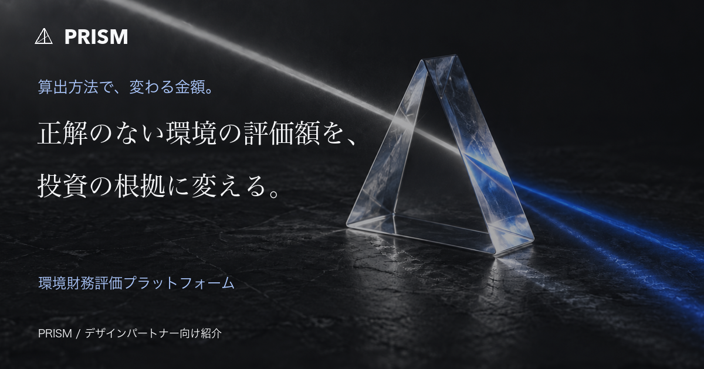

45秒 ブランドフィルム
1920×1080 / BGM付き / 無音でも理解できる画面内コピー
PRISM / PROMOTION KIT / 2026.10
算出方法で、変わる金額。
環境財務評価プラットフォーム
LP・動画・広告画像・営業資料・運用戦略を、
財務影響の算定・評価・判定を軸に揃えました。

1920×1080 / BGM付き / 無音でも理解できる画面内コピー
1080×1920 / SNSでの最初の接点に
制作・ローカル検証済み。外部公開・投稿・送信は行っていません。LPは現在、案件整理シートの取得を案内します。実在の相談URLをconfig.jsに設定すれば、相談への導線へ切り替わります。詳細は公開手順を参照してください。